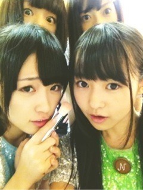

| 2012/10 26 Fri | 272回目*marika |
いつも読んでくださってる方、
初めて読んでくださった方
コメントしてくださった方
ありがとうございます。
LiVE GiRLPOP in zepp東京

人中同盟のうしろにいるのは誰カナ？
♪会いたかったかもしれない
♪ハウス！→せいたん
♪ぐるぐるカーテン→あみ
♪せっかちなかたつむり
♪走れ！Bicycle
♪おいでシャンプー→ゆみ姉
楽しかったよー

最高でした！
＼アメイジング／
DancingDollsさん
スマイレージさん
東京女子流さん
9nineさん
すごかった。素晴らしかった
かわいかった！キラキラしてた！
もうすっかりファンに...
乃木坂46になって、
アイドルにはまった私...
モニターの前でわきわき

他のグループのパフォーマンス
すごい勉強になります。
このような機会を乃木坂46にも
与えてくださって本当に嬉しいです！
乃木坂らしくこれからも頑張りたい。

今日もツインテールだあ。
さゆにゃんいじってたら
仕返しされたー

今日はありがとうございました

GiRLPOP最高

＼アメイジング／
**********
 アレルギーとかありますか？
アレルギーとかありますか？
 ないですよー！
今期のドラマで見てるのは？
悪魔ちゃん
走バイの衣装ってボタンに
ないですよー！
今期のドラマで見てるのは？
悪魔ちゃん
走バイの衣装ってボタンに
『Ｎ』ってあるんだね(o^_^o)
これは乃木坂のＮ？
おー気づいたんだね！
はっきりとは知らないけど、
たぶん乃木坂のＮだわよー

兄と仲いい？何して遊んだりする？
仲いいけど遊ぶことはないよ笑
つけまする？
バレエの発表会でやってた。
ばさばさのやつ！
スノボとかスキーとかするの?
しないよーできたら
かっこいいよね
質問が多かったのでだいぶ削った！
これからもこうすると思うけど、
かんにんな。
**********
さゆりんがブログに
いろいろ書いてるー！
だってさゆりんがーーー
最近ほっぺにちゅーどころか
食べようとしてくる。
さゆりんにはしゃーないから
かまってあげてるんだもん

でもさゆりんが他のところに
いったらいじけるもん。っへ

まじめなの撮ったぜ

この後載せられないくらいの顔も
撮ったよ
 当たり前のように
当たり前のように
当たり前のように
ほんで、生駒にもちゅーされた。
どおぅするううぅ←
......
明日は個握。
ゆみ姉最後の握手会です。
おもいっきり楽しむぞ！
まりか
コメント(218)
2012/10/26 23:36